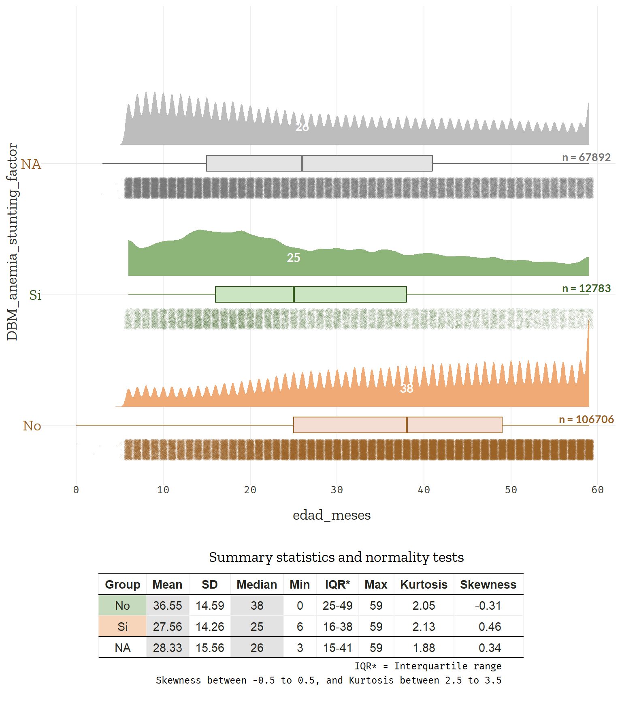
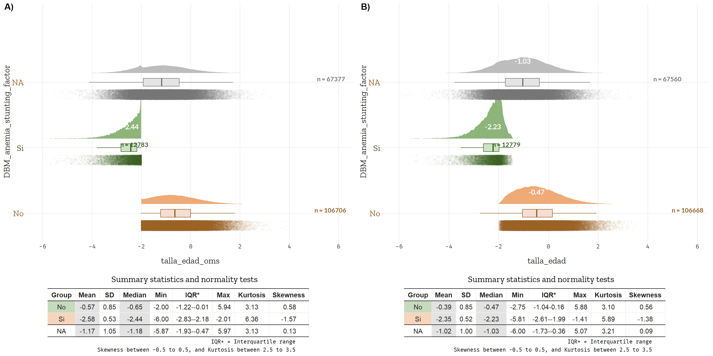
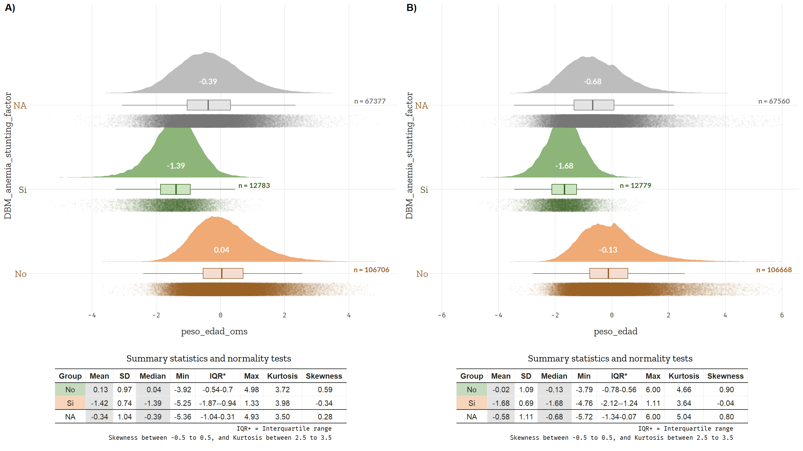
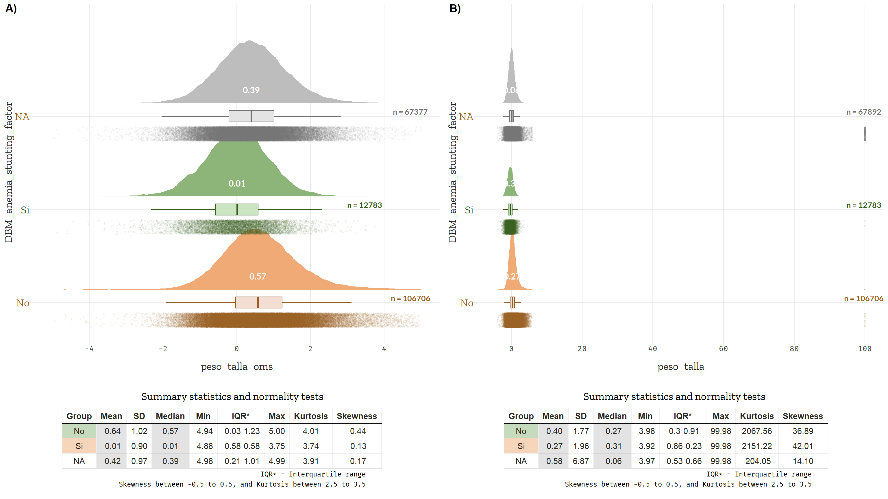
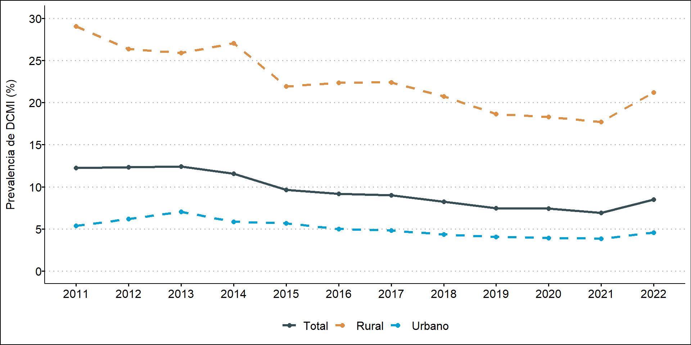

area_residencia_factor | No | Si | NA_ | Total |
|---|---|---|---|---|
Urbano | 79,826 (74.8%) | 5,029 (39.3%) | 41,054 (60.5%) | 125,909 (67.2%) |
Rural | 26,880 (25.2%) | 7,754 (60.7%) | 26,838 (39.5%) | 61,472 (32.8%) |
Total | 106,706 (100.0%) | 12,783 (100.0%) | 67,892 (100.0%) | 187,381 (100.0%) |
ENDES_TBM_2019
Load packages
Import data
Process data
Variable selection
Dictionary: Recode, relevel, and relabel variables
Exploratory Data Analysis
Categorical data
Missing, unique, and frequency analysis without weighting
Descriptive analysis: Measures of frequency and proportions
[[1]]
area_residencia_factor No Si NA_
Urbano 79,826 (74.8%) 5,029 (39.3%) 41,054 (60.5%)
Rural 26,880 (25.2%) 7,754 (60.7%) 26,838 (39.5%)
Total 106,706 (100.0%) 12,783 (100.0%) 67,892 (100.0%)
Total
125,909 (67.2%)
61,472 (32.8%)
187,381 (100.0%)
[[2]]
sexo_child_factor No Si NA_
Masculino 52,864 (49.5%) 7,384 (57.8%) 35,527 (52.3%)
Femenino 53,842 (50.5%) 5,399 (42.2%) 32,365 (47.7%)
Total 106,706 (100.0%) 12,783 (100.0%) 67,892 (100.0%)
Total
95,775 (51.1%)
91,606 (48.9%)
187,381 (100.0%)
[[3]]
education_factor No Si NA_
Sin educación 1,265 (1.2%) 658 (5.1%) 1,671 (2.5%)
Primaria 17,924 (16.8%) 5,349 (41.8%) 17,625 (26.0%)
Secundaria 67,683 (63.4%) 6,014 (47.0%) 41,012 (60.4%)
Superior 16,360 (15.3%) 411 (3.2%) 5,901 (8.7%)
<NA> 3,474 (3.3%) 351 (2.7%) 1,683 (2.5%)
Total 106,706 (100.0%) 12,783 (100.0%) 67,892 (100.0%)
Total
3,594 (1.9%)
40,898 (21.8%)
114,709 (61.2%)
22,672 (12.1%)
5,508 (2.9%)
187,381 (100.0%)
[[4]]
edad_meses_cat_factor No Si NA_
< 12 meses 6,681 (6.3%) 1,592 (12.5%) 11,420 (16.8%)
12 a 23 meses 16,296 (15.3%) 4,507 (35.3%) 19,437 (28.6%)
24 a 35 meses 24,847 (23.3%) 2,868 (22.4%) 14,013 (20.6%)
36 a 59 meses 58,882 (55.2%) 3,816 (29.9%) 23,022 (33.9%)
Total 106,706 (100.0%) 12,783 (100.0%) 67,892 (100.0%)
Total
19,693 (10.5%)
40,240 (21.5%)
41,728 (22.3%)
85,720 (45.7%)
187,381 (100.0%)
[[5]]
year No Si NA_ Total
2011 4,175 (3.9%) 797 (6.2%) 3,197 (4.7%) 8,169 (4.4%)
2012 4,494 (4.2%) 798 (6.2%) 3,338 (4.9%) 8,630 (4.6%)
2013 4,079 (3.8%) 769 (6.0%) 3,233 (4.8%) 8,081 (4.3%)
2014 4,382 (4.1%) 795 (6.2%) 3,389 (5.0%) 8,566 (4.6%)
2015 12,268 (11.5%) 1,567 (12.3%) 8,092 (11.9%) 21,927 (11.7%)
2016 11,028 (10.3%) 1,344 (10.5%) 7,256 (10.7%) 19,628 (10.5%)
2017 11,082 (10.4%) 1,235 (9.7%) 7,314 (10.8%) 19,631 (10.5%)
2018 12,310 (11.5%) 1,316 (10.3%) 7,781 (11.5%) 21,407 (11.4%)
2019 11,837 (11.1%) 1,089 (8.5%) 6,565 (9.7%) 19,491 (10.4%)
2020 7,269 (6.8%) 655 (5.1%) 3,848 (5.7%) 11,772 (6.3%)
2021 12,405 (11.6%) 1,121 (8.8%) 6,737 (9.9%) 20,263 (10.8%)
2022 11,377 (10.7%) 1,297 (10.1%) 7,142 (10.5%) 19,816 (10.6%)
Total 106,706 (100.0%) 12,783 (100.0%) 67,892 (100.0%) 187,381 (100.0%)
[[6]]
stunting No Si NA_ Total
No 106,706 (100.0%) 0 (0.0%) 51,811 (76.3%) 158,517 (84.6%)
Si 0 (0.0%) 12,783 (100.0%) 15,566 (22.9%) 28,349 (15.1%)
<NA> 0 (0.0%) 0 (0.0%) 515 (0.8%) 515 (0.3%)
Total 106,706 (100.0%) 12,783 (100.0%) 67,892 (100.0%) 187,381 (100.0%)
[[7]]
wasting No Si NA_ Total
No 106,363 (99.7%) 12,574 (98.4%) 66,946 (98.6%) 185,883 (99.2%)
Si 343 (0.3%) 209 (1.6%) 431 (0.6%) 983 (0.5%)
<NA> 0 (0.0%) 0 (0.0%) 515 (0.8%) 515 (0.3%)
Total 106,706 (100.0%) 12,783 (100.0%) 67,892 (100.0%) 187,381 (100.0%)
[[8]]
thinness No Si NA_ Total
No 106,241 (99.6%) 10,297 (80.6%) 64,427 (94.9%) 180,965 (96.6%)
Si 465 (0.4%) 2,486 (19.4%) 2,950 (4.3%) 5,901 (3.1%)
<NA> 0 (0.0%) 0 (0.0%) 515 (0.8%) 515 (0.3%)
Total 106,706 (100.0%) 12,783 (100.0%) 67,892 (100.0%) 187,381 (100.0%)
[[9]]
exceso_peso No Si NA_ Total
No 69,249 (64.9%) 10,011 (78.3%) 47,053 (69.3%) 126,313 (67.4%)
Si 37,457 (35.1%) 2,772 (21.7%) 20,835 (30.7%) 61,064 (32.6%)
<NA> 0 (0.0%) 0 (0.0%) 4 (0.0%) 4 (0.0%)
Total 106,706 (100.0%) 12,783 (100.0%) 67,892 (100.0%) 187,381 (100.0%)
[[10]]
anemia_child_factor No Si NA_
No 106,706 (100.0%) 0 (0.0%) 15,997 (23.6%)
Si 0 (0.0%) 12,783 (100.0%) 51,894 (76.4%)
<NA> 0 (0.0%) 0 (0.0%) 1 (0.0%)
Total 106,706 (100.0%) 12,783 (100.0%) 67,892 (100.0%)
Total
122,703 (65.5%)
64,677 (34.5%)
1 (0.0%)
187,381 (100.0%)
[[11]]
anemia_child_levels_factor No Si NA_
Sin anemia 106,706 (100.0%) 0 (0.0%) 15,997 (23.6%)
Leve 0 (0.0%) 8,225 (64.3%) 35,675 (52.5%)
Moderada 0 (0.0%) 4,396 (34.4%) 15,951 (23.5%)
Grave 0 (0.0%) 162 (1.3%) 268 (0.4%)
<NA> 0 (0.0%) 0 (0.0%) 1 (0.0%)
Total 106,706 (100.0%) 12,783 (100.0%) 67,892 (100.0%)
Total
122,703 (65.5%)
43,900 (23.4%)
20,347 (10.9%)
430 (0.2%)
1 (0.0%)
187,381 (100.0%)[[1]]
area_residencia_factor No Si NA_
Urbano 85,855 (70.5%) 269 (58.1%) 39,785 (61.1%)
Rural 35,897 (29.5%) 194 (41.9%) 25,381 (38.9%)
Total 121,752 (100.0%) 463 (100.0%) 65,166 (100.0%)
Total
125,909 (67.2%)
61,472 (32.8%)
187,381 (100.0%)
[[2]]
sexo_child_factor No Si NA_
Masculino 60,478 (49.7%) 281 (60.7%) 35,016 (53.7%)
Femenino 61,274 (50.3%) 182 (39.3%) 30,150 (46.3%)
Total 121,752 (100.0%) 463 (100.0%) 65,166 (100.0%)
Total
95,775 (51.1%)
91,606 (48.9%)
187,381 (100.0%)
[[3]]
education_factor No Si NA_
Sin educación 2,103 (1.7%) 17 (3.7%) 1,474 (2.3%)
Primaria 24,381 (20.0%) 167 (36.1%) 16,350 (25.1%)
Secundaria 74,381 (61.1%) 241 (52.1%) 40,087 (61.5%)
Superior 16,907 (13.9%) 27 (5.8%) 5,738 (8.8%)
<NA> 3,980 (3.3%) 11 (2.4%) 1,517 (2.3%)
Total 121,752 (100.0%) 463 (100.0%) 65,166 (100.0%)
Total
3,594 (1.9%)
40,898 (21.8%)
114,709 (61.2%)
22,672 (12.1%)
5,508 (2.9%)
187,381 (100.0%)
[[4]]
edad_meses_cat_factor No Si NA_
< 12 meses 7,371 (6.1%) 92 (19.9%) 12,230 (18.8%)
12 a 23 meses 19,235 (15.8%) 212 (45.8%) 20,793 (31.9%)
24 a 35 meses 28,436 (23.4%) 86 (18.6%) 13,206 (20.3%)
36 a 59 meses 66,710 (54.8%) 73 (15.8%) 18,937 (29.1%)
Total 121,752 (100.0%) 463 (100.0%) 65,166 (100.0%)
Total
19,693 (10.5%)
40,240 (21.5%)
41,728 (22.3%)
85,720 (45.7%)
187,381 (100.0%)
[[5]]
year No Si NA_ Total
2011 5,347 (4.4%) 18 (3.9%) 2,804 (4.3%) 8,169 (4.4%)
2012 5,505 (4.5%) 23 (5.0%) 3,102 (4.8%) 8,630 (4.6%)
2013 5,011 (4.1%) 11 (2.4%) 3,059 (4.7%) 8,081 (4.3%)
2014 5,155 (4.2%) 25 (5.4%) 3,386 (5.2%) 8,566 (4.6%)
2015 14,126 (11.6%) 95 (20.5%) 7,706 (11.8%) 21,927 (11.7%)
2016 12,470 (10.2%) 48 (10.4%) 7,110 (10.9%) 19,628 (10.5%)
2017 12,502 (10.3%) 49 (10.6%) 7,080 (10.9%) 19,631 (10.5%)
2018 13,890 (11.4%) 59 (12.7%) 7,458 (11.4%) 21,407 (11.4%)
2019 13,239 (10.9%) 38 (8.2%) 6,214 (9.5%) 19,491 (10.4%)
2020 8,155 (6.7%) 22 (4.8%) 3,595 (5.5%) 11,772 (6.3%)
2021 13,770 (11.3%) 32 (6.9%) 6,461 (9.9%) 20,263 (10.8%)
2022 12,582 (10.3%) 43 (9.3%) 7,191 (11.0%) 19,816 (10.6%)
Total 121,752 (100.0%) 463 (100.0%) 65,166 (100.0%) 187,381 (100.0%)
[[6]]
stunting No Si NA_ Total
No 106,363 (87.4%) 254 (54.9%) 51,900 (79.6%) 158,517 (84.6%)
Si 15,389 (12.6%) 209 (45.1%) 12,751 (19.6%) 28,349 (15.1%)
<NA> 0 (0.0%) 0 (0.0%) 515 (0.8%) 515 (0.3%)
Total 121,752 (100.0%) 463 (100.0%) 65,166 (100.0%) 187,381 (100.0%)
[[7]]
wasting No Si NA_ Total
No 121,752 (100.0%) 0 (0.0%) 64,131 (98.4%) 185,883 (99.2%)
Si 0 (0.0%) 463 (100.0%) 520 (0.8%) 983 (0.5%)
<NA> 0 (0.0%) 0 (0.0%) 515 (0.8%) 515 (0.3%)
Total 121,752 (100.0%) 463 (100.0%) 65,166 (100.0%) 187,381 (100.0%)
[[8]]
thinness No Si NA_ Total
No 119,146 (97.9%) 67 (14.5%) 61,752 (94.8%) 180,965 (96.6%)
Si 2,606 (2.1%) 396 (85.5%) 2,899 (4.4%) 5,901 (3.1%)
<NA> 0 (0.0%) 0 (0.0%) 515 (0.8%) 515 (0.3%)
Total 121,752 (100.0%) 463 (100.0%) 65,166 (100.0%) 187,381 (100.0%)
[[9]]
exceso_peso No Si NA_ Total
No 80,812 (66.4%) 463 (100.0%) 45,038 (69.1%) 126,313 (67.4%)
Si 40,940 (33.6%) 0 (0.0%) 20,124 (30.9%) 61,064 (32.6%)
<NA> 0 (0.0%) 0 (0.0%) 4 (0.0%) 4 (0.0%)
Total 121,752 (100.0%) 463 (100.0%) 65,166 (100.0%) 187,381 (100.0%)
[[10]]
anemia_child_factor No Si NA_
No 121,752 (100.0%) 0 (0.0%) 951 (1.5%)
Si 0 (0.0%) 463 (100.0%) 64,214 (98.5%)
<NA> 0 (0.0%) 0 (0.0%) 1 (0.0%)
Total 121,752 (100.0%) 463 (100.0%) 65,166 (100.0%)
Total
122,703 (65.5%)
64,677 (34.5%)
1 (0.0%)
187,381 (100.0%)
[[11]]
anemia_child_levels_factor No Si NA_
Sin anemia 121,752 (100.0%) 0 (0.0%) 951 (1.5%)
Leve 0 (0.0%) 272 (58.7%) 43,628 (66.9%)
Moderada 0 (0.0%) 178 (38.4%) 20,169 (31.0%)
Grave 0 (0.0%) 13 (2.8%) 417 (0.6%)
<NA> 0 (0.0%) 0 (0.0%) 1 (0.0%)
Total 121,752 (100.0%) 463 (100.0%) 65,166 (100.0%)
Total
122,703 (65.5%)
43,900 (23.4%)
20,347 (10.9%)
430 (0.2%)
1 (0.0%)
187,381 (100.0%)[[1]]
area_residencia_factor No Si NA_
Urbano 84,847 (71.1%) 1,200 (41.3%) 39,862 (61.1%)
Rural 34,428 (28.9%) 1,704 (58.7%) 25,340 (38.9%)
Total 119,275 (100.0%) 2,904 (100.0%) 65,202 (100.0%)
Total
125,909 (67.2%)
61,472 (32.8%)
187,381 (100.0%)
[[2]]
sexo_child_factor No Si NA_
Masculino 59,287 (49.7%) 1,675 (57.7%) 34,813 (53.4%)
Femenino 59,988 (50.3%) 1,229 (42.3%) 30,389 (46.6%)
Total 119,275 (100.0%) 2,904 (100.0%) 65,202 (100.0%)
Total
95,775 (51.1%)
91,606 (48.9%)
187,381 (100.0%)
[[3]]
education_factor No Si NA_
Sin educación 1,957 (1.6%) 154 (5.3%) 1,483 (2.3%)
Primaria 23,321 (19.6%) 1,263 (43.5%) 16,314 (25.0%)
Secundaria 73,271 (61.4%) 1,326 (45.7%) 40,112 (61.5%)
Superior 16,814 (14.1%) 83 (2.9%) 5,775 (8.9%)
<NA> 3,912 (3.3%) 78 (2.7%) 1,518 (2.3%)
Total 119,275 (100.0%) 2,904 (100.0%) 65,202 (100.0%)
Total
3,594 (1.9%)
40,898 (21.8%)
114,709 (61.2%)
22,672 (12.1%)
5,508 (2.9%)
187,381 (100.0%)
[[4]]
edad_meses_cat_factor No Si NA_
< 12 meses 7,253 (6.1%) 438 (15.1%) 12,002 (18.4%)
12 a 23 meses 18,689 (15.7%) 1,119 (38.5%) 20,432 (31.3%)
24 a 35 meses 27,817 (23.3%) 616 (21.2%) 13,295 (20.4%)
36 a 59 meses 65,516 (54.9%) 731 (25.2%) 19,473 (29.9%)
Total 119,275 (100.0%) 2,904 (100.0%) 65,202 (100.0%)
Total
19,693 (10.5%)
40,240 (21.5%)
41,728 (22.3%)
85,720 (45.7%)
187,381 (100.0%)
[[5]]
year No Si NA_ Total
2011 5,131 (4.3%) 183 (6.3%) 2,855 (4.4%) 8,169 (4.4%)
2012 5,351 (4.5%) 165 (5.7%) 3,114 (4.8%) 8,630 (4.6%)
2013 4,852 (4.1%) 170 (5.9%) 3,059 (4.7%) 8,081 (4.3%)
2014 5,040 (4.2%) 174 (6.0%) 3,352 (5.1%) 8,566 (4.6%)
2015 13,807 (11.6%) 405 (13.9%) 7,715 (11.8%) 21,927 (11.7%)
2016 12,226 (10.3%) 356 (12.3%) 7,046 (10.8%) 19,628 (10.5%)
2017 12,246 (10.3%) 313 (10.8%) 7,072 (10.8%) 19,631 (10.5%)
2018 13,625 (11.4%) 293 (10.1%) 7,489 (11.5%) 21,407 (11.4%)
2019 13,017 (10.9%) 220 (7.6%) 6,254 (9.6%) 19,491 (10.4%)
2020 8,022 (6.7%) 117 (4.0%) 3,633 (5.6%) 11,772 (6.3%)
2021 13,578 (11.4%) 215 (7.4%) 6,470 (9.9%) 20,263 (10.8%)
2022 12,380 (10.4%) 293 (10.1%) 7,143 (11.0%) 19,816 (10.6%)
Total 119,275 (100.0%) 2,904 (100.0%) 65,202 (100.0%) 187,381 (100.0%)
[[6]]
stunting No Si NA_ Total
No 106,241 (89.1%) 418 (14.4%) 51,858 (79.5%) 158,517 (84.6%)
Si 13,034 (10.9%) 2,486 (85.6%) 12,829 (19.7%) 28,349 (15.1%)
<NA> 0 (0.0%) 0 (0.0%) 515 (0.8%) 515 (0.3%)
Total 119,275 (100.0%) 2,904 (100.0%) 65,202 (100.0%) 187,381 (100.0%)
[[7]]
wasting No Si NA_ Total
No 119,146 (99.9%) 2,508 (86.4%) 64,229 (98.5%) 185,883 (99.2%)
Si 129 (0.1%) 396 (13.6%) 458 (0.7%) 983 (0.5%)
<NA> 0 (0.0%) 0 (0.0%) 515 (0.8%) 515 (0.3%)
Total 119,275 (100.0%) 2,904 (100.0%) 65,202 (100.0%) 187,381 (100.0%)
[[8]]
thinness No Si NA_ Total
No 119,275 (100.0%) 0 (0.0%) 61,690 (94.6%) 180,965 (96.6%)
Si 0 (0.0%) 2,904 (100.0%) 2,997 (4.6%) 5,901 (3.1%)
<NA> 0 (0.0%) 0 (0.0%) 515 (0.8%) 515 (0.3%)
Total 119,275 (100.0%) 2,904 (100.0%) 65,202 (100.0%) 187,381 (100.0%)
[[9]]
exceso_peso No Si NA_ Total
No 78,364 (65.7%) 2,887 (99.4%) 45,062 (69.1%) 126,313 (67.4%)
Si 40,911 (34.3%) 17 (0.6%) 20,136 (30.9%) 61,064 (32.6%)
<NA> 0 (0.0%) 0 (0.0%) 4 (0.0%) 4 (0.0%)
Total 119,275 (100.0%) 2,904 (100.0%) 65,202 (100.0%) 187,381 (100.0%)
[[10]]
anemia_child_factor No Si NA_
No 119,275 (100.0%) 0 (0.0%) 3,428 (5.3%)
Si 0 (0.0%) 2,904 (100.0%) 61,773 (94.7%)
<NA> 0 (0.0%) 0 (0.0%) 1 (0.0%)
Total 119,275 (100.0%) 2,904 (100.0%) 65,202 (100.0%)
Total
122,703 (65.5%)
64,677 (34.5%)
1 (0.0%)
187,381 (100.0%)
[[11]]
anemia_child_levels_factor No Si NA_
Sin anemia 119,275 (100.0%) 0 (0.0%) 3,428 (5.3%)
Leve 0 (0.0%) 1,770 (61.0%) 42,130 (64.6%)
Moderada 0 (0.0%) 1,062 (36.6%) 19,285 (29.6%)
Grave 0 (0.0%) 72 (2.5%) 358 (0.5%)
<NA> 0 (0.0%) 0 (0.0%) 1 (0.0%)
Total 119,275 (100.0%) 2,904 (100.0%) 65,202 (100.0%)
Total
122,703 (65.5%)
43,900 (23.4%)
20,347 (10.9%)
430 (0.2%)
1 (0.0%)
187,381 (100.0%)[[1]]
area_residencia_factor No Si NA_
Urbano 54,939 (67.5%) 12,694 (64.5%) 58,276 (67.5%)
Rural 26,393 (32.5%) 7,000 (35.5%) 28,079 (32.5%)
Total 81,332 (100.0%) 19,694 (100.0%) 86,355 (100.0%)
Total
125,909 (67.2%)
61,472 (32.8%)
187,381 (100.0%)
[[2]]
sexo_child_factor No Si NA_
Masculino 38,907 (47.8%) 11,057 (56.1%) 45,811 (53.0%)
Femenino 42,425 (52.2%) 8,637 (43.9%) 40,544 (47.0%)
Total 81,332 (100.0%) 19,694 (100.0%) 86,355 (100.0%)
Total
95,775 (51.1%)
91,606 (48.9%)
187,381 (100.0%)
[[3]]
education_factor No Si NA_
Sin educación 1,526 (1.9%) 403 (2.0%) 1,665 (1.9%)
Primaria 17,775 (21.9%) 4,543 (23.1%) 18,580 (21.5%)
Secundaria 49,308 (60.6%) 12,299 (62.5%) 53,102 (61.5%)
Superior 10,132 (12.5%) 2,005 (10.2%) 10,535 (12.2%)
<NA> 2,591 (3.2%) 444 (2.3%) 2,473 (2.9%)
Total 81,332 (100.0%) 19,694 (100.0%) 86,355 (100.0%)
Total
3,594 (1.9%)
40,898 (21.8%)
114,709 (61.2%)
22,672 (12.1%)
5,508 (2.9%)
187,381 (100.0%)
[[4]]
edad_meses_cat_factor No Si NA_
< 12 meses 4,544 (5.6%) 4,318 (21.9%) 10,831 (12.5%)
12 a 23 meses 12,473 (15.3%) 6,557 (33.3%) 21,210 (24.6%)
24 a 35 meses 19,479 (23.9%) 3,679 (18.7%) 18,570 (21.5%)
36 a 59 meses 44,836 (55.1%) 5,140 (26.1%) 35,744 (41.4%)
Total 81,332 (100.0%) 19,694 (100.0%) 86,355 (100.0%)
Total
19,693 (10.5%)
40,240 (21.5%)
41,728 (22.3%)
85,720 (45.7%)
187,381 (100.0%)
[[5]]
year No Si NA_ Total
2011 3,540 (4.4%) 865 (4.4%) 3,764 (4.4%) 8,169 (4.4%)
2012 3,757 (4.6%) 914 (4.6%) 3,959 (4.6%) 8,630 (4.6%)
2013 3,357 (4.1%) 993 (5.0%) 3,731 (4.3%) 8,081 (4.3%)
2014 3,392 (4.2%) 995 (5.1%) 4,179 (4.8%) 8,566 (4.6%)
2015 9,605 (11.8%) 2,260 (11.5%) 10,062 (11.7%) 21,927 (11.7%)
2016 8,439 (10.4%) 2,032 (10.3%) 9,157 (10.6%) 19,628 (10.5%)
2017 8,385 (10.3%) 1,993 (10.1%) 9,253 (10.7%) 19,631 (10.5%)
2018 9,196 (11.3%) 2,397 (12.2%) 9,814 (11.4%) 21,407 (11.4%)
2019 8,856 (10.9%) 1,961 (10.0%) 8,674 (10.0%) 19,491 (10.4%)
2020 5,376 (6.6%) 1,095 (5.6%) 5,301 (6.1%) 11,772 (6.3%)
2021 9,034 (11.1%) 2,041 (10.4%) 9,188 (10.6%) 20,263 (10.8%)
2022 8,395 (10.3%) 2,148 (10.9%) 9,273 (10.7%) 19,816 (10.6%)
Total 81,332 (100.0%) 19,694 (100.0%) 86,355 (100.0%) 187,381 (100.0%)
[[6]]
stunting No Si NA_ Total
No 69,249 (85.1%) 16,840 (85.5%) 72,428 (83.9%) 158,517 (84.6%)
Si 12,083 (14.9%) 2,772 (14.1%) 13,494 (15.6%) 28,349 (15.1%)
<NA> 0 (0.0%) 82 (0.4%) 433 (0.5%) 515 (0.3%)
Total 81,332 (100.0%) 19,694 (100.0%) 86,355 (100.0%) 187,381 (100.0%)
[[7]]
wasting No Si NA_ Total
No 80,812 (99.4%) 19,612 (99.6%) 85,459 (99.0%) 185,883 (99.2%)
Si 520 (0.6%) 0 (0.0%) 463 (0.5%) 983 (0.5%)
<NA> 0 (0.0%) 82 (0.4%) 433 (0.5%) 515 (0.3%)
Total 81,332 (100.0%) 19,694 (100.0%) 86,355 (100.0%) 187,381 (100.0%)
[[8]]
thinness No Si NA_ Total
No 78,364 (96.4%) 19,595 (99.5%) 83,006 (96.1%) 180,965 (96.6%)
Si 2,968 (3.6%) 17 (0.1%) 2,916 (3.4%) 5,901 (3.1%)
<NA> 0 (0.0%) 82 (0.4%) 433 (0.5%) 515 (0.3%)
Total 81,332 (100.0%) 19,694 (100.0%) 86,355 (100.0%) 187,381 (100.0%)
[[9]]
exceso_peso No Si NA_ Total
No 81,332 (100.0%) 0 (0.0%) 44,981 (52.1%) 126,313 (67.4%)
Si 0 (0.0%) 19,694 (100.0%) 41,370 (47.9%) 61,064 (32.6%)
<NA> 0 (0.0%) 0 (0.0%) 4 (0.0%) 4 (0.0%)
Total 81,332 (100.0%) 19,694 (100.0%) 86,355 (100.0%) 187,381 (100.0%)
[[10]]
anemia_child_factor No Si NA_
No 81,332 (100.0%) 0 (0.0%) 41,371 (47.9%)
Si 0 (0.0%) 19,694 (100.0%) 44,983 (52.1%)
<NA> 0 (0.0%) 0 (0.0%) 1 (0.0%)
Total 81,332 (100.0%) 19,694 (100.0%) 86,355 (100.0%)
Total
122,703 (65.5%)
64,677 (34.5%)
1 (0.0%)
187,381 (100.0%)
[[11]]
anemia_child_levels_factor No Si NA_
Sin anemia 81,332 (100.0%) 0 (0.0%) 41,371 (47.9%)
Leve 0 (0.0%) 13,169 (66.9%) 30,731 (35.6%)
Moderada 0 (0.0%) 6,411 (32.6%) 13,936 (16.1%)
Grave 0 (0.0%) 114 (0.6%) 316 (0.4%)
<NA> 0 (0.0%) 0 (0.0%) 1 (0.0%)
Total 81,332 (100.0%) 19,694 (100.0%) 86,355 (100.0%)
Total
122,703 (65.5%)
43,900 (23.4%)
20,347 (10.9%)
430 (0.2%)
1 (0.0%)
187,381 (100.0%)Numerical data
Descriptive statistics: Summary statistics
No. of observations = 187381
Var. name obs. mean median s.d. min. max.
1 edad_meses 187381 32.96 33 15.49 0 59
2 talla_edad 187007 -0.75 -0.76 1.04 -6 5.88
3 talla_edad_oms 186866 -0.92 -0.92 1.05 -6 5.97
4 peso_edad 187007 -0.33 -0.43 1.17 -5.72 6
5 peso_edad_oms 186866 -0.15 -0.2 1.06 -5.36 4.98
6 peso_talla 187381 0.42 0.16 4.38 -3.98 99.98
7 peso_talla_oms 186866 0.51 0.47 1.01 -4.98 5
8 DBM_anemia_stunting_factor 119489 1.107 1 0.309 1 2 Descriptive statistics: Grouped summary statistics
[[1]]
No. of observations = 106706
Var. name obs. mean median s.d. min. max.
1 edad_meses 106706 36.55 38 14.59 0 59
2 talla_edad 106668 -0.39 -0.47 0.85 -2.75 5.88
3 talla_edad_oms 106706 -0.57 -0.65 0.85 -2 5.94
4 peso_edad 106668 -0.02 -0.13 1.09 -3.79 6
5 peso_edad_oms 106706 0.13 0.04 0.97 -3.92 4.98
6 peso_talla 106706 0.4 0.27 1.77 -3.98 99.98
7 peso_talla_oms 106706 0.64 0.57 1.02 -4.94 5
8 DBM_anemia_stunting_factor
[[2]]
No. of observations = 12783
Var. name obs. mean median s.d. min. max.
1 edad_meses 12783 27.56 25 14.26 6 59
2 talla_edad 12779 -2.35 -2.23 0.52 -5.81 -1.41
3 talla_edad_oms 12783 -2.58 -2.44 0.53 -6 -2.01
4 peso_edad 12779 -1.68 -1.68 0.69 -4.76 1.11
5 peso_edad_oms 12783 -1.42 -1.39 0.74 -5.25 1.33
6 peso_talla 12783 -0.27 -0.31 1.96 -3.92 99.98
7 peso_talla_oms 12783 -0.01 0.01 0.9 -4.88 3.75
8 DBM_anemia_stunting_factor
[[3]]
No. of observations = 67892
Var. name obs. mean median s.d. min. max.
1 edad_meses 67892 28.33 26 15.56 3 59
2 talla_edad 67560 -1.02 -1.03 1 -6 5.07
3 talla_edad_oms 67377 -1.17 -1.18 1.05 -5.87 5.97
4 peso_edad 67560 -0.58 -0.68 1.11 -5.72 6
5 peso_edad_oms 67377 -0.34 -0.39 1.04 -5.36 4.93
6 peso_talla 67892 0.58 0.06 6.87 -3.97 99.98
7 peso_talla_oms 67377 0.42 0.39 0.97 -4.98 4.99
8 DBM_anemia_stunting_factor Data visualization: Raincloud plots and grouped summary statistics
El test de Shapiro-Wilk evalúa la normalidad de un conjunto de datos, pero en muestras grandes pierde utilidad porque detecta desviaciones mínimas como significativas. En la práctica, se recomienda aplicarlo en tamaños de muestra de hasta 5,000 observaciones, ya que más allá de este límite tiende a rechazar la hipótesis de normalidad incluso cuando la distribución es aproximadamente normal. Por otro lado, el test de Anderson-Darling es más sensible a la forma de las colas de la distribución, pero su cálculo es computacionalmente costoso debido al ordenamiento de los datos y la evaluación de una suma ponderada de diferencias. Con muestras masivas, la normalidad suele asumirse debido al Teorema del Límite Central, salvo en presencia de fuerte asimetría o colas pesadas. Para complementar estas pruebas, es recomendable usar histogramas, QQ-plots y métricas como skewness y kurtosis.




Produce outputs
Design
Table 1: Sociodemographic characteristics of Peruvian children
This is the univariate analysis
Unweighted descriptive analysis
Weighted descriptive analysis
Use the show_header_names() to see the column names that can be modified.
| Characteristic |
Absolute frequency
|
Weighted proportion
|
|
|---|---|---|---|
| N = 1873811 | N = 99,7632 | 95% CI | |
| Área de residencia | |||
| Urbano | 125,909 | 70.64 | 69.92 - 71.35 |
| Rural | 61,472 | 29.36 | 28.65 - 30.08 |
| Sexo del infante | |||
| Masculino | 95,775 | 51.13 | 50.81 - 51.45 |
| Femenino | 91,606 | 48.87 | 48.55 - 49.19 |
| Nivel educativo de la madre | |||
| Sin educación | 3,594 | 2.00 | 1.876 - 2.138 |
| Primaria | 40,898 | 22.50 | 22.02 - 22.99 |
| Secundaria | 114,709 | 63.19 | 62.67 - 63.71 |
| Superior | 22,672 | 12.31 | 11.96 - 12.66 |
| Edad del infante | |||
| < 12 meses | 19,693 | 10.38 | 10.19 - 10.57 |
| 12 a 23 meses | 40,240 | 21.63 | 21.37 - 21.89 |
| 24 a 35 meses | 41,728 | 22.31 | 22.04 - 22.57 |
| 36 a 59 meses | 85,720 | 45.69 | 45.40 - 45.98 |
| Doble carga de malnutrición | |||
| No | 106,706 | 90.44 | 90.13 - 90.74 |
| Si | 12,783 | 9.56 | 9.259 - 9.874 |
| Abbreviation: CI = Confidence Interval | |||
| 1 Unweighted N; Mean | |||
| 2 Weighted percentage; Mean (SD) | |||
Confirm with dplyr package
Table 2: Sociodemographic characteristics of Peruvian children by DBM status
This is the bivariate analysis
Chi-squared test with Rao & Scott’s second-order correction and Holm-Bonferroni method to adjust for multiple tests. Use (García-Pérez 2023) to understand the goodness of fit.
Weighted bivariate analysis
| Characteristic | No N = 58,9841 |
95% CI | Si N = 6,2371 |
95% CI | p-value2 |
|---|---|---|---|---|---|
| Área de residencia | <0.001 | ||||
| Urbano | 46,265 (78.44) | 77.77 - 79.09 | 2,458 (39.41) | 37.78 - 41.07 | |
| Rural | 12,719 (21.56) | 20.91 - 22.23 | 3,779 (60.59) | 58.93 - 62.22 | |
| Sexo del infante | <0.001 | ||||
| Masculino | 29,292 (49.66) | 49.23 - 50.09 | 3,575 (57.32) | 56.20 - 58.44 | |
| Femenino | 29,693 (50.34) | 49.91 - 50.77 | 2,662 (42.68) | 41.56 - 43.80 | |
| Nivel educativo de la madre | <0.001 | ||||
| Sin educación | 691 (1.21) | 1.113 - 1.315 | 358 (5.89) | 5.261 - 6.597 | |
| Primaria | 9,712 (17.00) | 16.55 - 17.45 | 2,806 (46.22) | 44.90 - 47.54 | |
| Secundaria | 37,842 (66.23) | 65.68 - 66.77 | 2,749 (45.28) | 43.88 - 46.68 | |
| Superior | 8,894 (15.57) | 15.10 - 16.04 | 159 (2.61) | 2.263 - 3.016 | |
| Edad del infante | <0.001 | ||||
| < 12 meses | 3,695 (6.26) | 6.054 - 6.482 | 782 (12.53) | 11.81 - 13.30 | |
| 12 a 23 meses | 9,276 (15.73) | 15.40 - 16.05 | 2,225 (35.67) | 34.57 - 36.79 | |
| 24 a 35 meses | 13,823 (23.44) | 23.08 - 23.80 | 1,407 (22.56) | 21.61 - 23.53 | |
| 36 a 59 meses | 32,190 (54.57) | 54.15 - 54.99 | 1,823 (29.24) | 28.23 - 30.27 | |
| Abbreviation: CI = Confidence Interval | |||||
| 1 n (%) | |||||
| 2 Pearson’s X^2: Rao & Scott adjustment | |||||
Confirm with dplyr package
Table 3: Binomial logistic regression analysis
Let’s use the svyglm() function from the survey package to fit a generalised linear model to data obtained from a complex survey design, incorporating inverse-probability weighting and design-based standard errors that account for stratification, clustering, and sample weights. This function returns model-robust standard errors. Specifically, these are Horvitz–Thompson-type standard errors, which are a generalisation of the sandwich estimators used in robust regression. In particular, a quasi-Poisson svyglm will return correct standard errors for relative risk regression models. This is a common approach in epidemiological studies to account for the complex survey design, including stratification, clustering, and sample weights.
Unadjusted analysis
Adjusted analysis
| Characteristic |
Unadjusted Analysis
|
Adjusted Analysis
|
||||
|---|---|---|---|---|---|---|
| IRR | 95% CI | p-value | IRR | 95% CI | p-value | |
| Área de residencia | ||||||
| Urbano | — | — | — | — | ||
| Rural | 4.54 | 4.27, 4.82 | <0.001 | 2.78 | 2.60, 2.96 | <0.001 |
| Sexo del infante | ||||||
| Masculino | — | — | — | — | ||
| Femenino | 0.76 | 0.72, 0.79 | <0.001 | 0.76 | 0.73, 0.79 | <0.001 |
| Nivel educativo de la madre | ||||||
| Sin educación | — | — | — | — | ||
| Primaria | 0.66 | 0.60, 0.72 | <0.001 | 0.74 | 0.68, 0.80 | <0.001 |
| Secundaria | 0.20 | 0.18, 0.22 | <0.001 | 0.34 | 0.31, 0.38 | <0.001 |
| Superior | 0.05 | 0.04, 0.06 | <0.001 | 0.11 | 0.09, 0.13 | <0.001 |
| Edad del infante | ||||||
| < 12 meses | — | — | — | — | ||
| 12 a 23 meses | 1.11 | 1.03, 1.19 | 0.004 | 1.14 | 1.06, 1.21 | <0.001 |
| 24 a 35 meses | 0.53 | 0.49, 0.57 | <0.001 | 0.55 | 0.52, 0.60 | <0.001 |
| 36 a 59 meses | 0.31 | 0.29, 0.33 | <0.001 | 0.31 | 0.29, 0.33 | <0.001 |
| Abbreviations: CI = Confidence Interval, IRR = Incidence Rate Ratio | ||||||
Figure 1
, , year = 2011
area_residencia_factor
DBM_anemia_stunting_factor Urbano Rural
No 5.759792 1.766505
Si 3.102523 6.838287
, , year = 2012
area_residencia_factor
DBM_anemia_stunting_factor Urbano Rural
No 5.824472 2.010863
Si 3.626780 6.803063
, , year = 2013
area_residencia_factor
DBM_anemia_stunting_factor Urbano Rural
No 5.510648 1.753359
Si 3.947857 5.796032
, , year = 2014
area_residencia_factor
DBM_anemia_stunting_factor Urbano Rural
No 6.251672 1.785239
Si 3.667016 6.264249
, , year = 2015
area_residencia_factor
DBM_anemia_stunting_factor Urbano Rural
No 8.301172 2.228765
Si 4.723609 5.918593
, , year = 2016
area_residencia_factor
DBM_anemia_stunting_factor Urbano Rural
No 7.955412 2.055178
Si 3.967023 5.589207
, , year = 2017
area_residencia_factor
DBM_anemia_stunting_factor Urbano Rural
No 6.918415 1.758647
Si 3.311445 4.794313
, , year = 2018
area_residencia_factor
DBM_anemia_stunting_factor Urbano Rural
No 6.775804 1.735439
Si 2.930827 4.296335
, , year = 2019
area_residencia_factor
DBM_anemia_stunting_factor Urbano Rural
No 6.671566 1.732491
Si 2.674378 3.756221
, , year = 2020
area_residencia_factor
DBM_anemia_stunting_factor Urbano Rural
No 6.347619 1.727246
Si 2.446678 3.663193
, , year = 2021
area_residencia_factor
DBM_anemia_stunting_factor Urbano Rural
No 6.447901 1.553701
Si 2.450392 3.163927
, , year = 2022
area_residencia_factor
DBM_anemia_stunting_factor Urbano Rural
No 5.671481 1.456616
Si 2.562712 3.705337